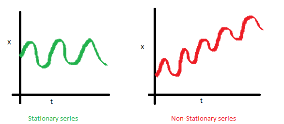
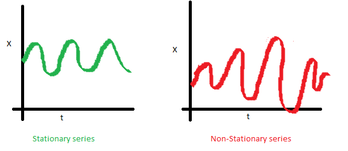
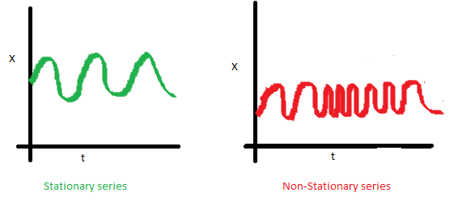

Chương 16 Mô hình ARIMA
16.1 Chuỗi thời gian dừng
Chuỗi thời gian dừng là yêu cầu bắt buộc để xây dựng mô hình ARIMA.
Định nghĩa chuối thời gian dừng:
- Giá trị trung bình không đổi theo thời gian

- Phương sai không đổi theo thời gian (homoskedaticity)

- Covariance của chuỗi thời gian thứ i và (i+m) không đổi

16.2 Mô hình ARIMA
ARIMA là viết tắt của Auto-Regressive Integrated Moving Average
\[ARIMA(p,d,q) = AR(p) + I(d) + MA(q)\]
Trong đó:
- p: Số bậc trong mô hình Auto-Regressive
- d: Số bậc trong mô hình Itegrated (số lần lấy \(\delta\) để có chuỗi thời gian dừng)
- q: Số bậc trong mô hình Moving Agerage
Integrated model
Gọi \(Y_1,...,Y_t\) là chuỗi thời gian gốc. Ta có:
- d=0: \(y_t=Y_t\)
- d=1: \(y_t=Y_t-Y_{t-1}\)
- d=2: \(y_t=(Y_t-Y_{t-1})-(Y_{t-1}-Y_{t-2})\)
Với d=2, còn được gọi là “the first difference of the first difference”. Sau khi được chuỗi dừng \(y_t\), ta có thể dự báo mô hình ARIMA như sau:
\[\hat{y}_t=\mu + \phi_1y_{t-1}+...+\phi_py_{t-p} + \theta_1\epsilon_{t-1}+...+\theta_q\epsilon_{t-q}\]
ACF vs. PACF
- ACF: Autocorrelation - đo correlation giữa các quan sát trong chuỗi
- PACF: Partial Auto Correlation - đo correlation giữa biến \(Y_t\) và \(Y_{t-k}\), loại bỏ các biến ở giữa chúng
Kỹ thuật tạo chuỗi dừng:
- Với biến có var biến đổi: log
- Với biến có mean biến đổi: Sử dụng “Difference”
Test chuỗi dừng: Test ADF (Augmented Dickey-Fuller)
- \(H_0\): Chuỗi không dừng (non-stationary)
- \(H_1\): Chuỗi dừng (stationary)
Lựa chọn tham số trong ARIMA
| Model | ACF | PACF |
|---|---|---|
| ARIMA(p,d,0) | Giảm dần đều về 0 | Giảm về 0 sau lag p |
| ARIMA(0,d,q) | Giảm về 0 sau lag q Giảm dần đều về 0 | |
| ARIMA(p,d,q) | Giảm dần đều về 0 | Giảm dần đều về 0 |
Xem xét ACF & PACF trong các chuỗi sau
library(forecast)
library(tseries)
library(dplyr)
library(ggfortify)
ar1 <- arima.sim(list(ar=c(0.89)), n = 100)
ar2 <- arima.sim(list(ar=c(0.89, -0.4858)), n = 100)
ma1 <- arima.sim(n = 100, list(ma = c(-0.2279)))
ma2 <- arima.sim(n = 100, list(ma = c(-0.2279, 0.2488)))
arma <- arima.sim(n = 100, list(ar = c(0.8897, -0.4858),
ma = c(-0.2279, 0.2488)))
#Tạo function
tseries.plot <- function(x){
par(mfrow=c(1,2));
Acf(x, col = "blue", main = paste(c("ACF plot")));
Pacf(x, col = "red", main = paste(c("PACF plot")));
}
purrr::map(list(ar1, ar2, ma1, ma2, arma), tseries.plot)


## [[1]]
##
## Partial autocorrelations of series 'x', by lag
##
## 1 2 3 4 5 6 7 8 9 10
## 0.839 -0.070 -0.072 -0.014 -0.164 -0.050 -0.011 -0.069 0.111 0.030
## 11 12 13 14 15 16 17 18 19 20
## 0.139 -0.011 0.007 0.019 0.059 -0.119 -0.050 -0.010 0.016 -0.002
##
## [[2]]
##
## Partial autocorrelations of series 'x', by lag
##
## 1 2 3 4 5 6 7 8 9 10
## 0.619 -0.523 0.036 -0.020 -0.051 -0.229 0.018 0.094 -0.146 -0.011
## 11 12 13 14 15 16 17 18 19 20
## -0.014 0.052 0.263 -0.046 0.114 0.026 -0.021 -0.116 -0.043 -0.041
##
## [[3]]
##
## Partial autocorrelations of series 'x', by lag
##
## 1 2 3 4 5 6 7 8 9 10
## -0.119 0.053 0.006 0.140 -0.064 -0.008 -0.067 0.201 -0.026 -0.077
## 11 12 13 14 15 16 17 18 19 20
## 0.113 -0.075 -0.071 0.013 -0.044 0.004 0.030 0.090 -0.008 0.005
##
## [[4]]
##
## Partial autocorrelations of series 'x', by lag
##
## 1 2 3 4 5 6 7 8 9 10
## 0.113 0.215 -0.255 -0.107 0.121 -0.073 0.003 -0.049 0.041 -0.043
## 11 12 13 14 15 16 17 18 19 20
## -0.108 -0.295 -0.021 -0.182 0.019 -0.009 0.019 -0.014 -0.045 -0.098
##
## [[5]]
##
## Partial autocorrelations of series 'x', by lag
##
## 1 2 3 4 5 6 7 8 9 10
## 0.593 -0.316 -0.161 0.050 -0.014 0.044 -0.140 0.066 -0.009 0.010
## 11 12 13 14 15 16 17 18 19 20
## 0.020 0.086 0.030 -0.026 -0.037 0.004 -0.022 0.052 0.199 0.06316.3 Ví dụ với R

## [1] 1
## Warning in adf.test(dNile): p-value smaller than printed p-value##
## Augmented Dickey-Fuller Test
##
## data: dNile
## Dickey-Fuller = -6.5924, Lag order = 4, p-value = 0.01
## alternative hypothesis: stationary
#ACF và PACF đưa ra gợi ý mô hình ARIMA(0,1,1): ACF giảm về 0 sau lag 1, PACF giảm dần về 0
fit <- arima(Nile, order = c(0,1,1))
fit##
## Call:
## arima(x = Nile, order = c(0, 1, 1))
##
## Coefficients:
## ma1
## -0.7329
## s.e. 0.1143
##
## sigma^2 estimated as 20600: log likelihood = -632.55, aic = 1269.09## ME RMSE MAE MPE MAPE MASE
## Training set -11.9358 142.8071 112.1752 -3.574702 12.93594 0.841824
## ACF1
## Training set 0.1153593## [1] "coef" "sigma2" "var.coef" "mask" "loglik"
## [6] "aic" "arma" "residuals" "call" "series"
## [11] "code" "n.cond" "nobs" "model"
##
## Box-Ljung test
##
## data: fit$residuals
## X-squared = 1.3711, df = 1, p-value = 0.2416#H0: Autocorrelation của residual bằng 0
#H1: Autocorrelation của residual khác 0
#Dự báo
forecast(fit, 3)## Point Forecast Lo 80 Hi 80 Lo 95 Hi 95
## 1971 798.3673 614.4307 982.3040 517.0605 1079.674
## 1972 798.3673 607.9845 988.7502 507.2019 1089.533
## 1973 798.3673 601.7495 994.9851 497.6663 1099.068
## Series: Nile
## ARIMA(1,1,1)
##
## Coefficients:
## ar1 ma1
## 0.2544 -0.8741
## s.e. 0.1194 0.0605
##
## sigma^2 estimated as 20177: log likelihood=-630.63
## AIC=1267.25 AICc=1267.51 BIC=1275.04Mô hình trên cho thấy ARIMA(0,1,1) phản ánh tốt số lượng:
- Residual có phân phối chuẩn
- Residual có autocorrelation bằng 0 (p value > 0.24)